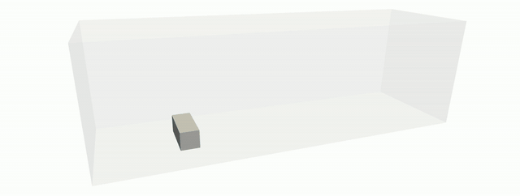
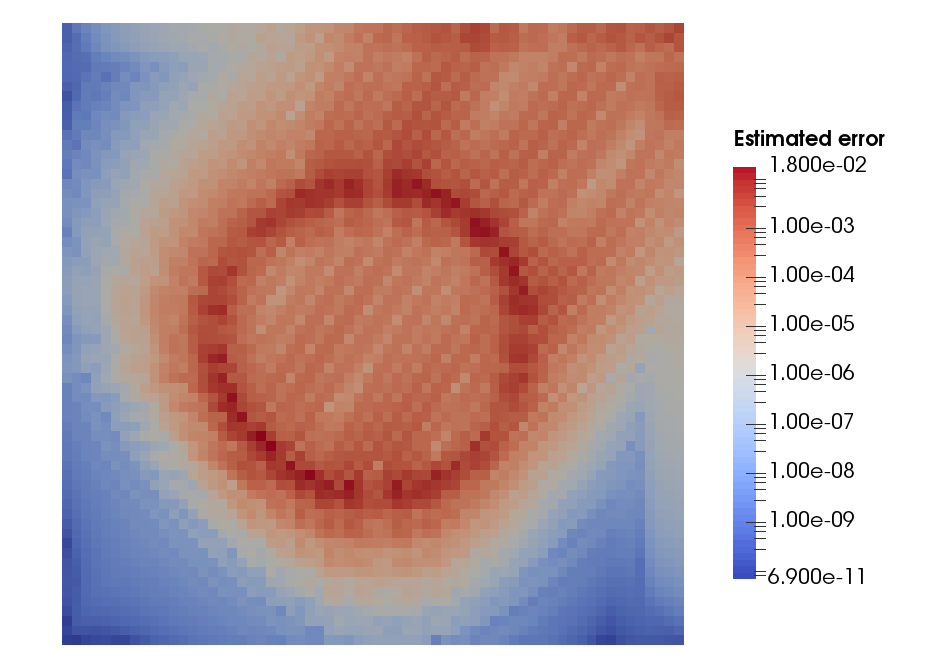
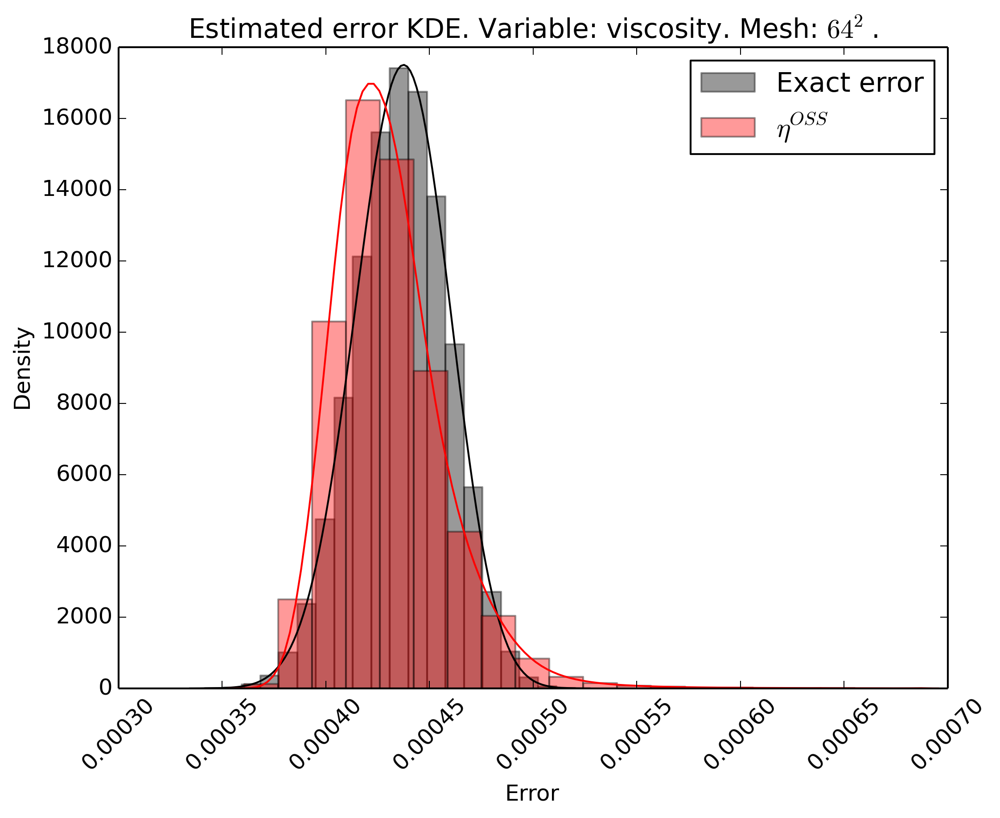
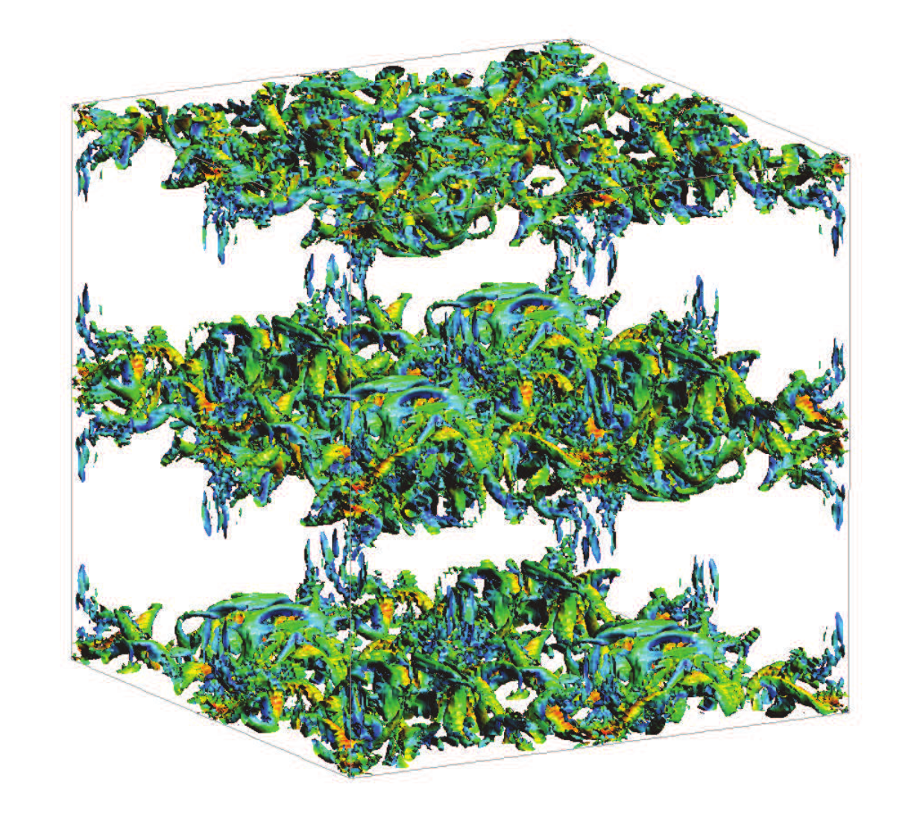

Research
Research Summary
Current research
My current research focuses on the development of efficient and accurate numerical methods for multi-phase, multi-material and multi-physics problems appearing in engineering applications. In particular, I’m interested on novel numerical methods for problems involving fluids interacting with structures, with especial emphasis on flows with moving interfaces such as ocean waves interacting with energy harvesting devices. Other problems that I have interest on are:
- Free-surface flows interacting with structures
- Interaction of floating bodies and free-surface flows
- Structures with complex and evolving geometries subject to hydro/aerodynamic loads
- Vortex-induced vibrations
Research at Duke University
During the time that spent as a Postdoctoral Associate at Duke University, my research focused on three main topics in the field of computational mechanics: embedded Finite Element methods for free surface flows, error estimators for the uncertainty quantification of numerical solutions and novel numerical algorithms for the simulation of complex solid dynamics.
The goal of using embedded Finite Element methods for free surface flows is to enable an easy discretization of the computational domain, keeping the accuracy of the solution. I participated in the development of the Weighted Shifted Boundary Method, an embedded framework for moving embedded domains that avoids the re-construction of cut elements.
The main interest regarding the error estimators is to define algorithms able to quantify the error of a simulation that could be applied in a general framework, both from the numerical point of view (using different numerical methods such as the Finite Element or Finite Volume methods) and the physical point of view (solving multi-physics problems).
With respect to the simulation of complex solid dynamics, I developed novel numerical algorithms for the simulation of viscoelastic or viscoplastic solids subjected to large deformations, based on the Dynamic Variational Multiscale framework.
-
The Shifted Boundary Method (SBM) belongs to the class of unfitted (or immersed, or embedded) finite element methods and was recently introduced for the Poisson, linear advection/diffusion, Stokes, Navier-Stokes, acoustics, and shallow-water equations. By reformulating the original boundary value problem over a surrogate (approximate) computational domain, the SBM avoids integration over cut cells and the associated problematic issues regarding numerical stability and matrix conditioning. Accuracy is maintained by modifying the original boundary conditions using Taylor expansions. Hence the name of the method, that shifts the location and values of the boundary conditions. We extended the SBM to the simulation of incompressible Navier-Stokes flows with moving free-surfaces, by appropriately weighting its variational form with the elemental volume fraction of active fluid. This approach prevents spurious pressure oscillations in time, which would otherwise be produced if the total active fluid volume were to change abruptly over a time step. In fact, the proposed weighted SBM method induces small mass (i.e., volume) conservation errors, which converge quadratically in the case of piecewise-linear finite element interpolations, as the grid is refined.
References:
- Colomés, Oriol, et al. "A weighted Shifted Boundary Method for free surface flow problems." Journal of Computational Physics 424 (2021): 109837. https://doi.org/10.1016/j.jcp.2020.109837
-
When trying to quantify the uncertainty of a given simulation, one has to identify the sources of such uncertainty. These sources can be classified into input uncertainty, numerical approximation uncertainty, or modelling uncertainty. In the Computational Modelling Lab at Duke University, we focused on the quantification of numerical approximation uncertainty (also combined with input uncertainty) using Variational Multiscale error estimators.
Our main goal in this topic was the development of a family of Variational Multiscale error estimators for the Uncertainty Quantification of Mesh Discretization Error under uncertain input parameters. We developed error estimators that could be used in most numerical approximation frameworks and that can be applied to several physical problems.
We applied such algorithms for the uncertainty quantification of turbulent reacting flows.
 References:
- Colomés, Oriol, Guglielmo Scovazzi, and Johann Guilleminot. "On the robustness of variational multiscale error estimators for the forward propagation of uncertainty." Computer Methods in Applied Mechanics and Engineering 342 (2018): 384-413.https://doi.org/10.1016/j.cma.2018.07.041
- Colomés, Oriol, et al. "A Finite Volume Error Estimator Inspired by the Variational Multiscale Approach." 2018 AIAA Non-Deterministic Approaches Conference. 2018.https://doi.org/10.2514/6.2018-1178
-
Not available
PhD thesis
The objective of my PhD thesis was to develop efficient Finite Element (FE) solvers for turbulent incompressible flow problems. In particular, I worked with stabilized FE methods and their application to the simulation of turbulent flows. In addition, I also worked on efficient time integration techniques through implicit-explicit Runge-Kutta schemes. All my research was done in FEMPAR, a scientific software for the simulation of problems governed by partial differential equations (PDEs), which was originally designed to efficiently exploit distributed-memory supercomputers and easily handle multiphysics problems, one of the main objectives of the CIMNE/LSSC group.
-
The study of the Variational MultiScale (VMS) methods as a Large Eddy Simulation (LES) model for turbulent incompressible flows is one of the CIMNE/LSSC research topics. We are interested on the performance of VMS methods when turbulent incompressible flows are simulated without adding any kind of physical-based model. We consider VMS models obtained by different subgrid scale approximations wich include either static or dynamic subscales, linear or nonlinear multiscale splitting and different choices of the subscale space.
References:
- Colomés, Oriol, et al. "Assessment of variational multiscale models for the large eddy simulation of turbulent incompressible flows." Computer Methods in Applied Mechanics and Engineering 285 (2015): 32-63.https://doi.org/10.1016/j.cma.2014.10.041
- Colomés, Oriol, Santiago Badia, and Javier Principe. "Mixed finite element methods with convection stabilization for the large eddy simulation of incompressible turbulent flows." Computer Methods in Applied Mechanics and Engineering 304 (2016): 294-318.https://doi.org/10.1016/j.cma.2016.02.026
-
Sometimes, when simulating transient problems one needs to use very small time steps in order to face the small time scales inherent to the problem, e.g. turbulent flows. The solution of these kind of problems usually involve a huge amount of time steps, which increase the computational cost of the simulation. In order to deal with this issue, we are developing efficient and accurate time integration techniques throuhg Implicit-Explicit Runge-Kutta schemes.
References:
- Colomés, Oriol, and Santiago Badia. "Segregated Runge–Kutta methods for the incompressible Navier–Stokes equations." International Journal for Numerical Methods in Engineering 105.5 (2016): 372-400.https://doi.org/10.1002/nme.4987
-
Turbulent flows are characterized by having a wide range of temporal and spatial scales. Accurate solutions require the resolution of the smallest scales, which increases the computational cost. The resulting system of equations can reach several millions of unknowns, so in order to solve such problems we must use Supercomputers. The solver scalability is mandatory when using distributed memory machines, where the problems are being solved in parallel with a large amount of processors. In our group we use the so called Balanced Domain Decomposition with Constrains (BDDC), which have been proven to have excelent scalability problems for laplacian type problems. Additionally, a block preconditioning technique is used to better condition the system.
References:
- Colomés, Oriol, and Santiago Badia. "Segregated Runge–Kutta time integration of convection-stabilized mixed finite element schemes for wall-unresolved LES of incompressible flows." Computer Methods in Applied Mechanics and Engineering 313 (2017): 189-215.https://doi.org/10.1016/j.cma.2016.09.040
- Colomés Gené, Oriol. "Large scale Finite Element solvers for the large eddy simulation of incompressible turbulent flows." (2016).http://hdl.handle.net/2117/96307
See my publications for a deeper description of these topics.
Interests
- Finite Element simulations
- Computational Fluid Dynamics
- Computational mechanics
- Fluid-Structure interaction
- Large Scale computing
- Turbulence